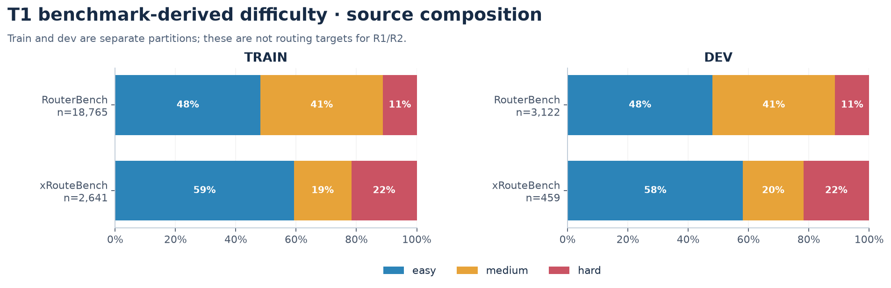
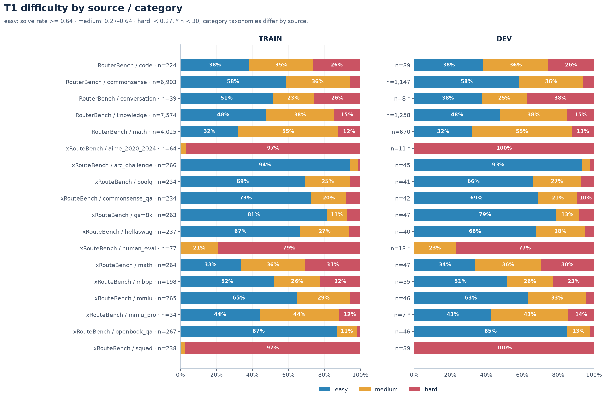
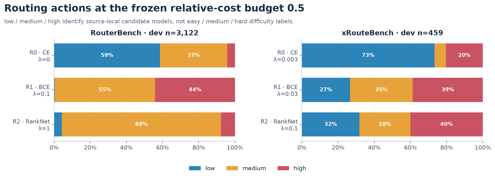
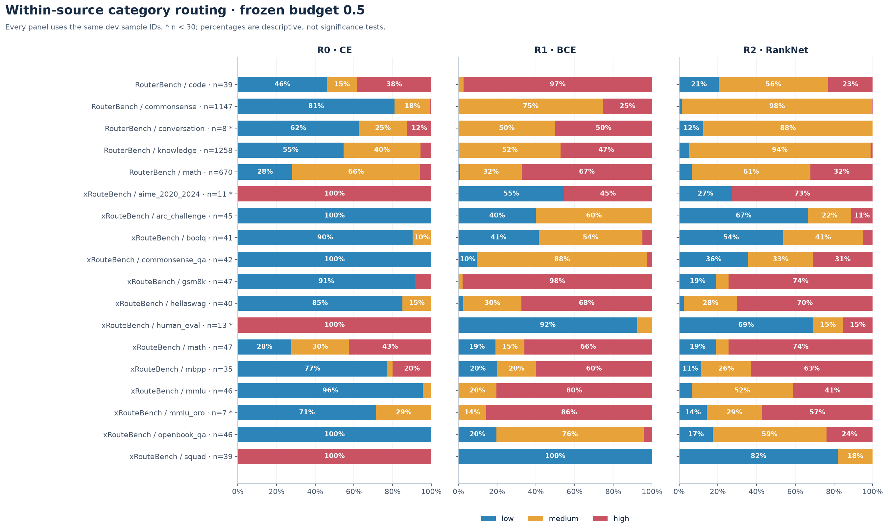
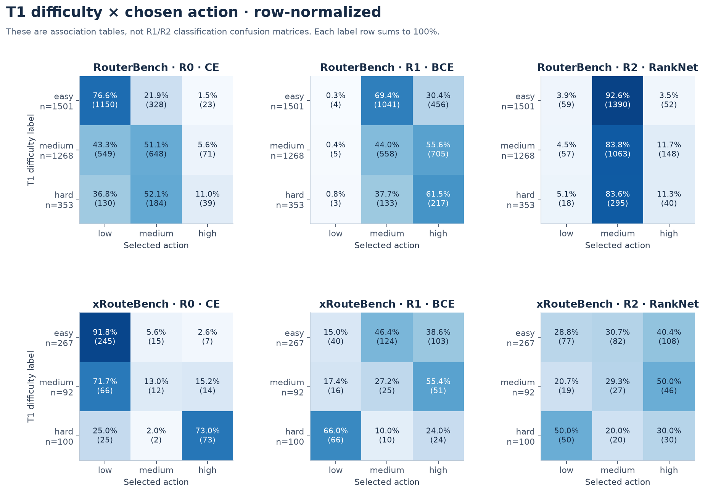
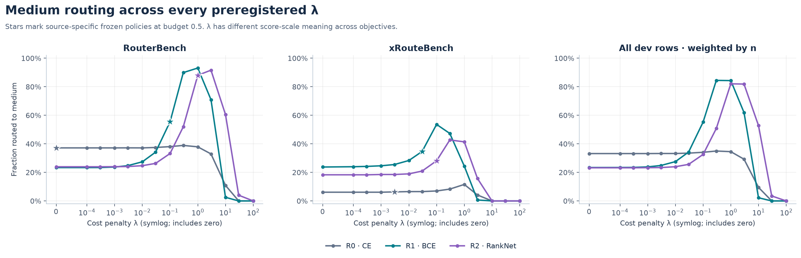
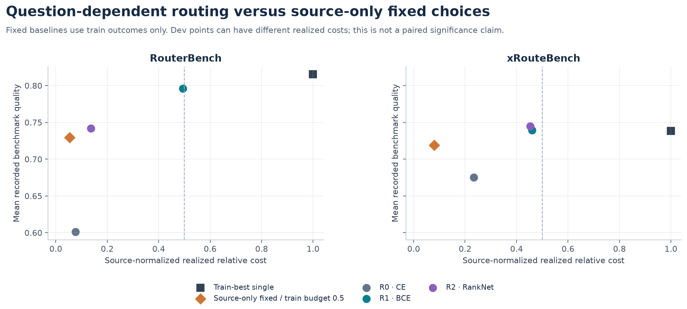
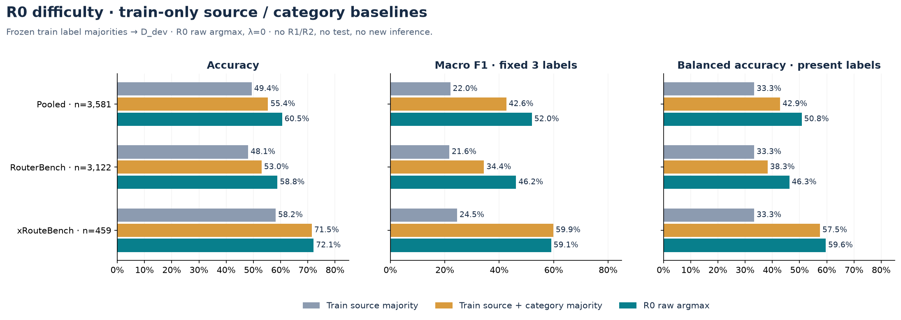
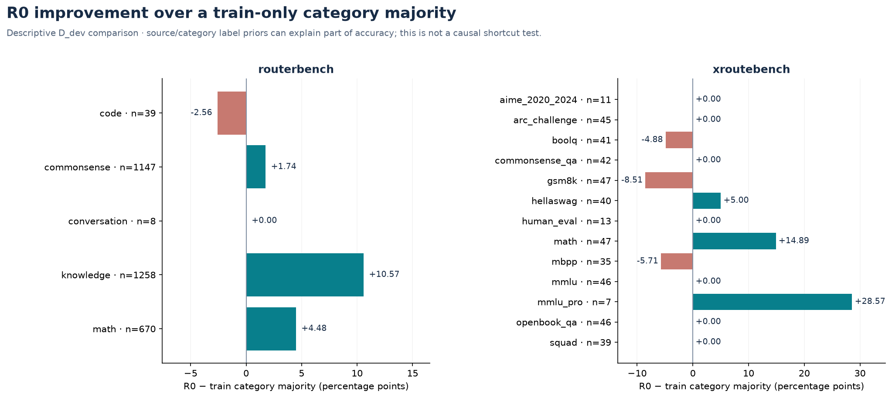
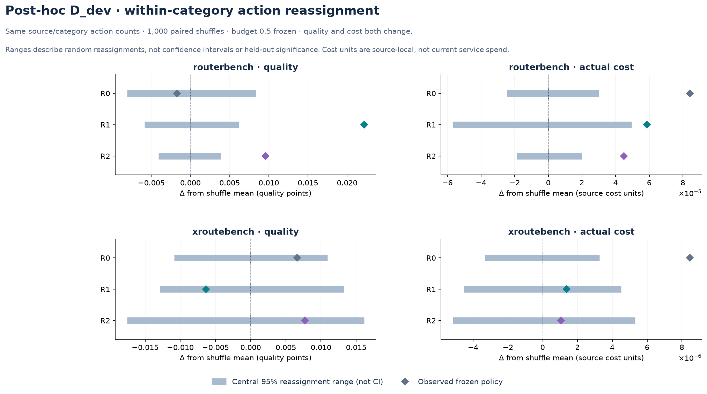

VALIDATION DIAGNOSTICS · SEED 42 · FROZEN POLICY
난이도와 라우팅 선택을
원천·카테고리별로 확인하기
학습 21,406건 / 개발검증 3,581건. 개발검증은 기존 R0·R1·R2 점수를 재집계했습니다. RouterArena는 별도의 고정 설정 추론 결과로 구분했고 정책을 다시 선택하지 않았습니다.
난이도 라벨과 라우팅 단계는 서로 다릅니다.
T1 easy/medium/hard는 정답률 기반 난이도입니다. 선택 action low/medium/high는 원천별 3개 후보 중 하나입니다. R1의 medium 선택이 많다는 사실만으로 “질문을 전부 중간 난이도로 판정했다”고 해석할 수 없습니다.
budget 0.5에서 medium을 선택한 비율
|
R0 · CE |
R1 · BCE |
R2 · RankNet |
| source_dataset |
|
|
|
| RouterBench |
37.2% |
55.5% |
88.0% |
| xRouteBench |
6.3% |
34.6% |
28.1% |
검증 데이터는 RouterBench 3,122건(87.2%), xRouteBench 459건(12.8%)입니다. 전체 평균만 보면 큰 원천의 양상이 과대표현될 수 있습니다.
실제 후보 모델과 점수 의미
|
low |
medium |
high |
| routerbench |
mistralai/mistral-7b-chat |
zero-one-ai/Yi-34B-Chat |
gpt-4-1106-preview |
| xroutebench |
gpt-oss-20b |
gpt-oss-120b |
cogito-v2-1-671b |
R0는 난이도 분류 확률에 비용 정책을 적용합니다. R1은 후보별 독립 성공 점수, R2는 후보 사이의 상대 품질 점수에 비용 정책을 적용합니다. R2 점수는 성공 확률이 아닙니다.
medium 집중에 비용 정책이 미치는 영향
같은 모델 점수에서 λ만 0으로 놓은 진단과, 저장된 budget 0.5 정책을 비교합니다. 예를 들어 RouterBench에서 R2의 medium 비율은 λ=0일 때 23.9%, 고정 정책 λ=1에서는 88.0%입니다. 이 차이는 비용 정책 적용으로 발생합니다. λ=0 결과는 진단용이며 정책을 다시 선택한 것이 아닙니다.
| method |
source_dataset |
lambda_zero_medium_rate |
locked_medium_rate |
| ordinal |
routerbench |
37.2% |
37.2% |
| ordinal |
xroutebench |
6.1% |
6.3% |
| pointwise |
routerbench |
23.4% |
55.5% |
| pointwise |
xroutebench |
23.7% |
34.6% |
| pairwise |
routerbench |
23.9% |
88.0% |
| pairwise |
xroutebench |
18.3% |
28.1% |
학습·검증 난이도 분포
T1은 전체 후보 모델의 정답률로 만든 난이도 지표입니다. 정답률 0.64 이상은 easy, 0.27 이상 0.64 미만은 medium, 그 미만은 hard입니다. 사람의 난이도 판정과 동일한 정답으로 취급하지 않습니다.

PNG 원본을 열려면 그림을 누르세요.
카테고리별 난이도
원천마다 카테고리 체계가 달라 원천/카테고리 조합을 유지했습니다. 오른쪽은 왼쪽과 같은 카테고리 순서이며, 별표(*)는 30건 미만입니다.

PNG 원본을 열려면 그림을 누르세요.
고정 budget 0.5의 라우팅 분포
각 방법·원천에 저장된 λ를 그대로 적용했습니다. low/medium/high는 해당 원천의 후보 모델 순서이며 easy/medium/hard 난이도와 다른 개념입니다. 공개 벤치마크의 후보는 Claude 모델이 아닙니다.

PNG 원본을 열려면 그림을 누르세요.
같은 원천 안에서 카테고리별 라우팅
같은 검증 샘플을 비교합니다. medium 비중 하나만으로 붕괴 여부를 판단할 수 없습니다. 원천별 모델 비용, 질문별 품질 예측과 λ가 함께 결정합니다.

PNG 원본을 열려면 그림을 누르세요.
난이도와 실제 선택의 관계
각 행은 같은 T1 난이도에 속하는 질문입니다. R1·R2의 학습 목표는 난이도 맞히기가 아니므로 이 표를 분류 정확도나 혼동행렬로 해석하면 안 됩니다.

PNG 원본을 열려면 그림을 누르세요.
전체 λ 그리드에서 medium 비율
기존 곡선 저장 과정에서 중복 비용 점이 생략됐으므로, 원래 등록된 14개 λ 모두를 저장 점수로 복원했습니다. 별은 budget 0.5에서 고정한 원천별 정책입니다. λ 숫자의 의미는 CE·BCE·RankNet 점수 척도에 따라 다릅니다. 오른쪽은 원천 비율로 가중한 전체 검증 데이터입니다.

PNG 원본을 열려면 그림을 누르세요.
원천만 아는 고정 선택과 비교
Source-only fixed는 학습 데이터에서 원천별 평균 비용이 budget 0.5 이하인 후보 중 평균 품질이 가장 높은 하나를 고릅니다. Train-best single은 비용 제한 없이 학습 평균 품질로 선택합니다. 두 기준 모두 검증 결과로 후보를 다시 고르지 않았습니다. 그래프의 실현 비용은 같지 않으므로 동일 비용 우월성이나 통계적 유의성으로 해석하지 않습니다.

PNG 원본을 열려면 그림을 누르세요.
R0 난이도 진단: 원천별 학습 다수 라벨과 비교
이 표는 λ를 적용하기 전 R0 raw argmax를 T1과 비교합니다. source-only 기준은 학습 데이터의 원천별 다수 라벨 하나입니다. R1·R2에는 같은 정확도 지표를 적용하지 않습니다.
| source_dataset |
train_majority_label |
dev_n |
source_only_label_accuracy |
r0_raw_argmax_t1_accuracy |
| routerbench |
easy |
3122 |
48.1% |
58.8% |
| xroutebench |
easy |
459 |
58.2% |
72.1% |
검증과 재현
원본 manifest SHA, artifact SHA·크기, 모든 sample ID의 일대일 결합, 중첩 메타데이터·품질·비용 열, train/dev 중복 그룹 분리, T1 임계값 재구성, 저장된 품질·비용 곡선의 라우팅 비율을 확인했습니다. 작은 셀과 단일 seed의 차이는 기술 통계이며 유의성 검정 결과가 아닙니다.
고정 λ 보기
| method |
source |
budget |
lambda |
| ordinal |
routerbench |
0.5 |
0.000 |
| ordinal |
xroutebench |
0.5 |
0.003 |
| pointwise |
routerbench |
0.5 |
0.100 |
| pointwise |
xroutebench |
0.5 |
0.030 |
| pairwise |
routerbench |
0.5 |
1.000 |
| pairwise |
xroutebench |
0.5 |
0.100 |
수치 원본: diagnostics.json · 출력 SHA manifest · 재현 스크립트
PYTHONPATH=/private/tmp/llm-router-report-deps .venv/bin/python ml/scripts/render-routing-diagnostics.py
R0: 카테고리의 다수 라벨만 알아도 설명되는가?
학습 데이터의 원천별 다수 라벨, 원천·카테고리별 다수 라벨을 각각 고정해 개발검증에 적용했습니다. 두 기준선은 검증 정답으로 규칙을 맞추지 않았습니다. 비교 대상은 비용 정책 적용 전 R0의 난이도 분류이며 R1·R2에는 이 정확도를 적용하지 않습니다.

xRouteBench 정확도는 카테고리 기준선 71.46%, R0 72.11%로, R0의 추가 정답은 459건 중 3건입니다. Macro F1은 기준선 0.5986가 R0 0.5905보다 높습니다. RouterBench는 기준선 53.01%에서 R0 58.84%로 개선됩니다.
높은 원천별 정확도만으로 질문의 난이도를 일반화했다고 결론 낼 수 없습니다. 단순한 카테고리 정보가 일부 정확도를 설명하지만, R0 전체가 카테고리 규칙에만 의존한다는 인과 증명도 아닙니다. 카테고리별 표본 수와 다른 지표를 함께 봐야 합니다.
카테고리별 정확도 차이

표본이 작은 구간의 큰 차이는 과해석하지 않습니다. 0은 같은 정확도이며 반드시 동일한 예측을 뜻하지는 않습니다.
독립 분석 메모 · 전체 지표·train prior·입력 SHA · 행별 예측 · 분석 재현 · 시각화·독립 검증 · 파일 manifest
사후 진단: 카테고리 안에서 선택을 바꿔도 비슷한가?
동일한 원천·카테고리 안에서 고정 budget 0.5의 선택을 1,000회 재배정했습니다. 각 모델의 low/medium/high 사용 건수는 매번 그대로입니다. 모든 모델에는 같은 행 permutation을 적용했습니다. 막대는 재배정 결과의 중앙 95% 범위이고 점은 실제 고정 정책입니다. 각 행의 셔플 평균을 0으로 놓았습니다.

이 범위는 신뢰구간이 아닙니다. 이미 모델·정책 선택에 사용한 개발검증의 사후 진단이며, 독립 test의 유의성 검정도 아닙니다. 선택 비율을 유지해도 문항별 비용이 달라 실현 비용이 바뀝니다. 각 원천 비용 단위 그대로 표시했으며, 원천 간 비용을 평균하거나 현재 서비스 비용으로 환산하지 않았습니다.
RouterBench에서는 R1·R2의 품질이 셔플 범위 위에 있어 카테고리별 모델 사용 비율 이상의 질문별 선택 정보가 있다는 보조 근거입니다. 하지만 비용도 범위 위이므로 같은 비용에서 더 낫다는 뜻은 아닙니다. xRouteBench에서는 세 모델의 품질이 모두 범위 안에 있습니다. 이 진단만으로 출처·카테고리 규칙에 대한 의존을 배제하거나 R1의 질문별 선택 우위를 일반화할 수 없습니다.
해석 메모 · 1,000회 원시 집계·지표·SHA · 수치 표 · 분석 재현 · 시각화·분포 검증 · 파일 manifest
RouterArena: 공식 라벨과 R0·R1·R2의 선택
정제된 full 8,379건과 대응하는 robustness 412쌍을 고정 λ=0·최대 512토큰으로 확인했습니다. 세 모델의 같은 질문 ID와 공식 라벨을 검증했습니다. 전체 카테고리·도메인·medium·robustness 보고서 열기 →

R0는 난이도 분류기이고 R1·R2는 action 슬롯의 argmax 투영입니다. R1·R2 표는 난이도 학습 성능, 후보별 실측 성공률, 운영 경로 또는 공식 Arena Score가 아닙니다. 개발검증의 T1 정답률 기반 라벨과 Arena 공식 Difficulty는 정의가 다르므로 정확도 차이를 같은 과제의 성능 하락이라고 단정하지 않습니다.
과거 RouterArena 평가를 학습 전에 확인한 이력이 있어 완전히 보지 않은 blind test가 아닙니다. Full과 robustness는 같은 원본의 쌍이므로 합산하지 않습니다. 이번 진단으로 모델·정책을 다시 선택하거나 배포하지 않았습니다.
전체 수치·검증 내역 · 산출 manifest